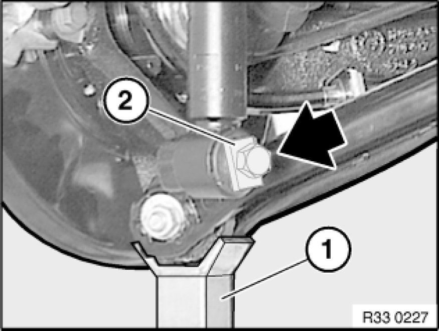

Removing and Installing/Replacing Rear Left or Right Coil Spring
33 53 000 - Removing and installing / replacing rear left or right coil spring

Important!
Both coil springs on the relevant axle must be replaced only in the event of corrosion breakage!

Necessary preliminary tasks:
- Remove rear wheel Removing or Installing Front or Rear Wheel.
- Remove output shaft from rear differential and tie back
- Remove stabilizer link on both sides from stabilizer Replacing Stabilizer Links for Stabilizer
- If necessary, remove jointed rod from sensor lever of ride-height sensor Replacing Rear Ride-Height Sensor

Important!
Risk of damage!
Brake hose must not be exposed to tensile loads.
Release screw and remove bracket with brake hose.
Tightening torque 34 32 3AZ 34 32 Brake Lines.

Warning!
Danger of injury!
Failure to comply with the following instructions may result in the vehicle slipping off the lifting platform and critically injuring other persons.
When supporting components, make sure that
- the vehicle can no longer be raised or lowered
- the vehicle does not lift off the locating plates on the lifting platform

Support trailing arm with a workshop jack (1).
Release screw.
Lower workshop jack (1).
Installation Note:
Thrust washer (2) on rubber bearing must point to screw head.
Tighten bolt in normal position Moving Vehicle Into Normal Position.
Tightening torque, 33 52 1AZ Shock Absorbers (Rear).
Press trailing arm downwards.
Pull out barrel spring to the side.
Remove upper spring pad (1) from take-up locator/frame side member.
Installation Note:
Position coil spring with upper spring pad (1) on lower spring pad (2) mounted in control arm and align to take-up locator/frame side member.
Raise trailing arm using a workshop jack.
Important!
Spring pads must be positively seated in the take-up locator/frame side member or control arm to prevent the coil spring from springing out of the centering mount.
Installation Note:
Check spring mounts (1, 3) for damage, replace if necessary.
Attach spring mount at top (1) to coil spring (2).
After installation:
- Check headlight adjustment Adjusting Headlights, correct if necessary